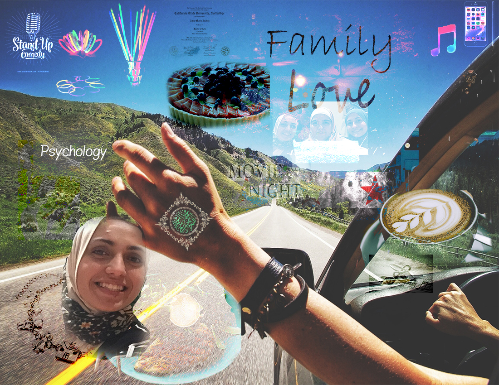
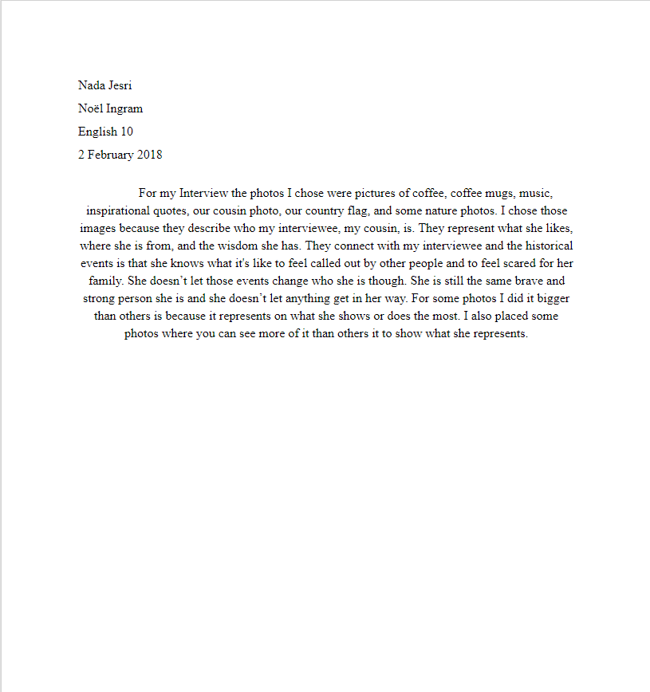
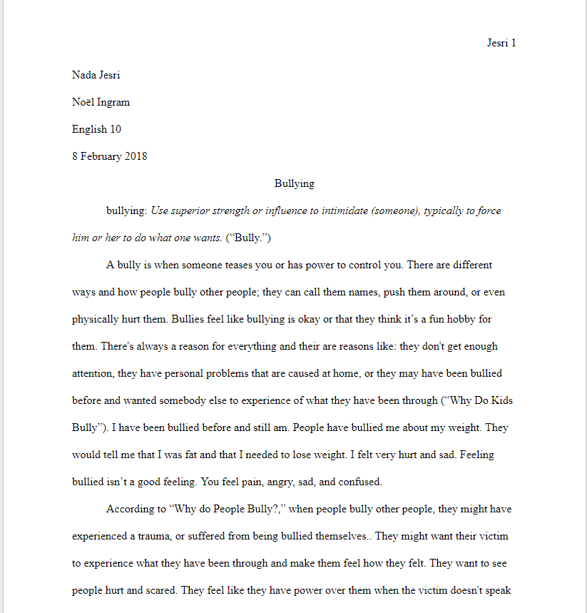

Humanities 10
Here is my subject layered portrait and my essay. For my subject layered portrait, I created a photoshop photo of my interviewee from my interview from Daramola's class. I also wrote a small reflection on it. For my Essay, I worte about bullying because I want to spread that bullying isn't okay and I shared my own experience with bullying.

Full Image

Reflection

Essay